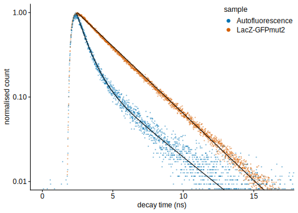
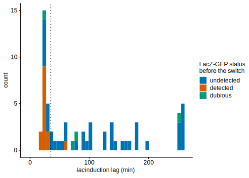
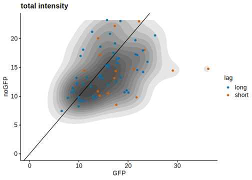

Import from Ludovit’s analysis (offset adjusted manually so that the exponential fit looks straight in semi-log scale):
(myplots[['FLIM_decay']] <- bind_rows(
read_delim(here('./data_FLIM/decay_curves/decay_GFP.dat'), delim='\t', skip=2, na = "---",
col_names=c("time_IRF", "IRF", "time_decay", "decay", "time_fit", "fit", "time_resid", "resid")) %>%
mutate(sample='LacZ-GFPmut2',
time_decay=time_decay - .3, time_fit=time_fit - .3,
decay=decay/max(decay) - .0011, fit=fit/max(fit, na.rm=T) - .0011) ,
read_delim(here('./data_FLIM/decay_curves/decay_noGFP.dat'), delim='\t', skip=2, na = "---",
col_names=c("time_decay", "decay", "time_fit", "fit", "time_resid", "resid")) %>%
mutate(sample='Autofluorescence',
decay=decay-.0131, fit=fit-.0131) ,
) %>%
ggplot(aes(group=sample)) +
geom_point(aes(time_decay, decay, col=sample), size=1, stroke=0, alpha=.5) +
geom_line(aes(time_fit, fit)) +
scale_y_log10() +
coord_cartesian(xlim=c(0, 17), ylim=c(1e-2, 1)) +
labs(x= 'decay time (ns)', y='normalised count') +
guides(col=guide_legend(override.aes = list(size=3, alpha=1))) +
theme(legend.position = c(.99, .99), legend.justification = c(1, 1)) +
NULL)
# ggsave('GFPmut2_decay.pdf', width=5, height=4)First, we compare the proportions of cells with detectable LacZ-GFP in FLCS snapshots and the fraction of cells with short lags
(myplots[['FLIM_snapshot_hist']] <- bind_rows(
readxl::read_xlsx(here("./data_FLIM/FLCS_lacInduction.xlsx"), sheet='Snapshot', range = "A1:C228") %>%
filter(is.na(date), gfp!='-1') %>%
mutate(gfp=as.numeric(gfp)) %>%
summarise(n=sum(!is.na(gfp)), p=sum(gfp==1)/n, p_se=sqrt(p*(1-p)/n)) %>%
mutate(method='LacZ-GFP\n(FLCS)'),
tibble(n=1633, p=0.3, p_se=sqrt(p*(1-p)/n), method='short lag\n(microfluidics)'),
) %>%
ggplot(aes(method, p)) +
geom_bar(stat='identity', width=0.7) +
geom_errorbar(aes(ymin=p-p_se, ymax=p+p_se), width=.2) +
geom_text(aes(method, y=0.5, label=paste0('(n = ', n, ')'))) +
expand_limits(y=0.5) +
labs(y='proportion of cells') +
theme(axis.title.x = element_blank()) +
NULL)bind_cols(
readxl::read_xlsx(here("./data_FLIM/FLCS_lacInduction.xlsx"), sheet='Snapshot', range = "A1:C228") %>%
filter(is.na(date), gfp!='-1') %>%
mutate(gfp=as.numeric(gfp)) %>%
summarise(n=sum(!is.na(gfp)), p=sum(gfp==1)/n, p_se=sqrt(p*(1-p)/n)) %>%
rename_all(~paste0(., '_FLCS')),
tibble(n=1633, p=0.3, p_se=sqrt(p*(1-p)/n)) %>%
rename_all(~paste0(., '_lags')),
) %>%
ggplot(aes(p_FLCS, p_lags)) +
geom_abline(lty='dashed', size=.2) +
ggforce::geom_ellipse(aes(x0=p_FLCS, y0=p_lags, a=p_se_FLCS, b=p_se_lags, angle=0), fill='gray20', size=.2, alpha=.2) +
geom_point(col=ggCustomTJ::brewer_cols[1]) +
# geom_errorbar(aes(ymin=p-p_se, ymax=p+p_se), width=.5) +
expand_limits(x=c(0, 0.5), y=c(0, 0.5)) +
coord_fixed() +
labs(x='proportion of cells\nwith LacZ-GFP (FLCS)', y='proportion of cells with\nshort lags (microfluidics)')+
NULLWe do mother machine experiments where growth and LacZ-GFP expression are measured using FLIM. Before the switch, one to 2 cells per growth channel is measured with FLCS (and analysed using filters pattern-matched to LAcZ-GFP decay curves).
Cells must match 3 criteria in order to be called GFP positive:
(myplots[['flim_gfp_criteria_cpm']] <-
bind_cols(
readxl::read_xlsx(here("./data_FLIM/FLCS_lacInduction.xlsx"), sheet="MotherMachine", range = "A1:C75"),
readxl::read_xlsx(here("./data_FLIM/FLCS_lacInduction.xlsx"), sheet='MotherMachine', range = "K2:P75", col_types="numeric",
col_names = c('n', 'n_se', 'D', 'D_se', 'cpm', 'cpm_se')),
) %>%
mutate(gfp=as.numeric(gfp),
ncpm = cpm / median(cpm, na.rm=T),
d_time = .33^2/(4*D) * 1000,
) %>%
# filter(!is.na(ncpm))
ggplot(aes(ncpm, fill=factor(gfp))) +
geom_histogram(binwidth = .4) +
geom_vline(xintercept = 2.55, lty='dashed') +
scale_fill_discrete(limits=c(0, 1, -1), labels=c('undetected', 'detected', 'dubious')) +
coord_cartesian(xlim=c(0, 28)) +
labs(x='normalized CPM (AU)')+
theme(legend.position = 'none') +
NULL)(myplots[['flim_gfp_criteria_nb']] <-
bind_cols(
readxl::read_xlsx(here("./data_FLIM/FLCS_lacInduction.xlsx"), sheet="MotherMachine", range = "A1:C75"),
readxl::read_xlsx(here("./data_FLIM/FLCS_lacInduction.xlsx"), sheet='MotherMachine', range = "K2:P75", col_types="numeric",
col_names = c('n', 'n_se', 'D', 'D_se', 'cpm', 'cpm_se')),
) %>%
mutate(gfp=as.numeric(gfp),
ncpm = cpm / median(cpm, na.rm=T),
d_time = .33^2/(4*D) * 1000,
) %>%
ggplot(aes(ncpm, n, col=factor(gfp))) +
geom_point() +
geom_vline(xintercept = 2.55, lty='dashed') +
geom_hline(yintercept = 20, lty='dashed') +
scale_y_log10() +
scale_colour_discrete(limits=c(0, 1, -1), labels=c('undetected', 'detected', 'dubious')) +
coord_cartesian(xlim=c(0, 28)) +
labs(y='fitted number of\nGFP molecules')+
theme(legend.position = 'none') +
NULL)(myplots[['flim_gfp_criteria_diff']] <-
bind_cols(
readxl::read_xlsx(here("./data_FLIM/FLCS_lacInduction.xlsx"), sheet="MotherMachine", range = "A1:C75"),
readxl::read_xlsx(here("./data_FLIM/FLCS_lacInduction.xlsx"), sheet='MotherMachine', range = "K2:P75", col_types="numeric",
col_names = c('n', 'n_se', 'D', 'D_se', 'cpm', 'cpm_se')),
) %>%
mutate(gfp=as.numeric(gfp),
ncpm = cpm / median(cpm, na.rm=T),
d_time = .33^2/(4*D) * 1000,
) %>%
ggplot(aes(ncpm, d_time, col=factor(gfp))) +
geom_point() +
geom_vline(xintercept = 2.55, lty='dashed') +
geom_hline(yintercept = 3, lty='dashed') +
geom_hline(yintercept = 30, lty='dashed') +
scale_y_log10() +
scale_colour_discrete(limits=c(0, 1, -1), labels=c('undetected', 'detected', 'dubious')) +
coord_cartesian(xlim=c(0, 28)) +
labs(y='fitted diffusion\ntime (ms)')+
theme(legend.position = 'none') +
NULL)For all cells measured by FLCS (sample biased for cells with short lags), I estimated the lag visually (as the first frame where the GFP fluorescence become higher than the noise in uninduced neighbouring cells).
This reveals that:
It is remarkable that 8 out of 22 cells featuring short lags have no GFP detected. This can be due to
(myplots[['FLIM_lag_hist']] <- left_join(
readxl::read_xlsx(here("./data_FLIM/FLCS_lags.xlsx"), range = "A1:E75"),
readxl::read_xlsx(here("./data_FLIM/FLCS_lacInduction.xlsx"), sheet="MotherMachine", range = "A1:C75"),
) %>%
mutate(frame=as.numeric(frame), lag=as.numeric(lag), gfp=as.numeric(gfp)) %>%
filter(!is.na(gfp)) %>%
mutate(lag=ifelse(is.infinite(lag) & date==20200122, 252, lag)) %>%
mutate(lag=ifelse(is.infinite(lag) & date==20200123, 261, lag)) %>%
mutate(lag=ifelse(is.infinite(lag) & date==20200128, 180, lag)) %>%
# filter(!is.na(lag), !is.na(gfp))
# summarise(n_s=sum(lag<35, na.rm=T)/sum(!is.na(lag)))
# filter(lag<30, gfp==0)
ggplot(aes(lag, fill=factor(gfp))) +
geom_histogram(position='stack', binwidth=6) +
geom_vline(xintercept=35, lty='dotted') +
expand_limits(x=0) +
scale_fill_discrete(limits=c(0, 1, -1), labels=c('undetected', 'detected', 'dubious')) +
labs(x=lac_lags_label, fill='LacZ-GFP status\nbefore the switch') +
# labs(x=lac_lags_label, fill='GFP status\n(FLCS)') +
NULL)
Noticeably, the distribution of fitted number of GFP is discontinuous in mother machine experiments. We believe that this is a side effect of the complicated optical environemnt created by PDMS channel which resulted in poor signal-to-noise ratio.
bind_rows(
bind_cols(
readxl::read_xlsx(here("./data_FLIM/FLCS_lacInduction.xlsx"), sheet='Snapshot', range = "A1:C228"),
readxl::read_xlsx(here("./data_FLIM/FLCS_lacInduction.xlsx"), sheet='Snapshot', range = "K2:L228", col_names = c('n', 'se')),
) %>%
select(gfp, n) %>% mutate(dataset='snapshot'),
bind_cols(
readxl::read_xlsx(here("./data_FLIM/FLCS_lacInduction.xlsx"), sheet="MotherMachine", range = "A1:C75"),
readxl::read_xlsx(here("./data_FLIM/FLCS_lacInduction.xlsx"), sheet="MotherMachine", range = "K2:L75",
col_names = c('n', 'se')),
) %>%
mutate(gfp=as.numeric(gfp), n=as.numeric(n), se=as.numeric(se), dataset='mother machine') %>%
select(dataset, gfp, n),
) %>%
# filter(gfp==1) %>%
mutate(n = ifelse(gfp==0, 0, n), n = ifelse(gfp==-1, NA, n)) %>%
mutate(dataset = relevel(factor(dataset), 'snapshot')) %>%
ggplot(aes(n)) +
facet_wrap(~dataset, ncol=1, scales = 'free_y') +
geom_histogram(binwidth = 1) +
expand_limits(x=0) +
# scale_y_log10() +
# xlim(0, 20) +
labs(x='number of GFP') +
NULL# ggsave('gfp_histo_FLCS_MoM.pdf', width=5, height=3)
bind_cols(
readxl::read_xlsx(here("./data_FLIM/FLCS_lacInduction.xlsx"), sheet='Snapshot', range = "A1:C228"),
readxl::read_xlsx(here("./data_FLIM/FLCS_lacInduction.xlsx"), sheet='Snapshot', range = "K2:L228", col_names = c('n', 'se')),
) %>%
filter(gfp==1) %>%
pull(n) %>% sd()## [1] 3.475612Let’s look at the CPM critera for each class:
left_join(
readxl::read_xlsx(here("./data_FLIM/FLCS_lags.xlsx"), range = "A1:E75"),
bind_cols(
readxl::read_xlsx(here("./data_FLIM/FLCS_lacInduction.xlsx"), sheet="MotherMachine", range = "A1:C75"),
readxl::read_xlsx(here("./data_FLIM/FLCS_lacInduction.xlsx"), sheet="MotherMachine", range = "H2:H75", col_names ='ncpm'),
readxl::read_xlsx(here("./data_FLIM/FLCS_lacInduction.xlsx"), sheet="MotherMachine", range = "O2:O75", col_names ='cpm_flcs'),
)
) %>%
mutate(frame=as.numeric(frame), lag=as.numeric(lag), gfp=as.numeric(gfp),
ncpm=as.numeric(ncpm), cpm_flcs=as.numeric(cpm_flcs),
ncpm_flcs = cpm_flcs / median(cpm_flcs, na.rm=T),
) %>%
# filter(!is.na(gfp)) %>%
# mutate(lag=ifelse(is.infinite(lag) & date==20200122, 252, lag)) %>%
# mutate(lag=ifelse(is.infinite(lag) & date==20200123, 261, lag)) %>%
# mutate(lag=ifelse(is.infinite(lag) & date==20200128, 180, lag)) %>%
mutate(lag_type=lag, lag_type=ifelse(lag<35, 'short', lag_type), lag_type=ifelse(lag>=35, 'long', lag_type)) %>%
ggplot(aes(ncpm_flcs)) +
facet_grid(lag_type~.) +
geom_histogram(binwidth = .5) +
expand_limits(x=0) +
# xlim(NA, 20) +
# labs(title='mother machine') +
NULLIn order to estimate whether FLIM intensity (without FLCS) can be used to measure difference in GFP before the switch, we proceed as follow:
intden is the total fluorescence in the ROI)bind_rows(
read_csv(here('./data_FLIM/20200128_lac1_shortLags.csv')) %>%
mutate(lag='short'),
read_csv(here('./data_FLIM/20200128_lac1_longLags.csv')) %>%
mutate(lag='long'),
) %>%
rename_all(tolower) %>%
separate(label, c('img', 'roi', 'frame'), sep=":") %>%
select(-x1, -img) %>%
mutate(ch_type=c('GFP', 'noGFP')[ch]) %>%
filter(ch_type=='GFP') %>%
gather(var, value, intden, mean, mode, max) %>%
ggplot(aes(value, col=lag)) +
facet_wrap(~var, scales = 'free') +
geom_freqpoly() +
labs(col='type of lag') +
# theme(legend.position='top') +
NULL# ggsave('FLIM_sensitivity.pdf', width=8, height=3.5)Unfortunately, we cannot find any statistics capable of separating the 2 types of cells…
Let’s look at the total intensity of GFP channel vs total intensity of noGFP channel. From the epifluorescence measurement on cells with no GFP sequence, we know that autofluo fluctuates by ± 20 equivalent GFP molecules; here there is a 3-fold change (would correspond to e.g. 40 ± 20 for epifluo measurements).
bind_rows(
read_csv(here('./data_FLIM/20200128_lac1_shortLags.csv')) %>%
mutate(lag='short'),
read_csv(here('./data_FLIM/20200128_lac1_longLags.csv')) %>%
mutate(lag='long'),
) %>%
rename_all(tolower) %>%
separate(label, c('img', 'roi', 'frame'), sep=":") %>%
select(-x1, -img) %>%
mutate(ch_type=c('GFP', 'noGFP')[ch]) %>%
select(roi, ch_type, lag, intden) %>%
pivot_wider(names_from=ch_type, values_from=intden) %>%
ggplot(aes(GFP, noGFP)) +
geom_abline() +
stat_density_2d(fill=rgb(0,0,0,.1), geom = "polygon", show.legend=FALSE) +
geom_point(aes(col=lag)) +
expand_limits(x=0, y=0) +
labs(title='total intensity', col='lag') +
NULL
# bind_rows(
# read_csv(here('./data_FLIM/20200128_lac1_shortLags.csv')) %>%
# mutate(lag='short'),
# read_csv(here('./data_FLIM/20200128_lac1_longLags.csv')) %>%
# mutate(lag='long'),
# ) %>%
# rename_all(tolower) %>%
# separate(label, c('img', 'roi', 'frame'), sep=":") %>%
# select(-x1, -img) %>%
# mutate(ch_type=c('GFP', 'noGFP')[ch]) %>%
# select(roi, ch_type, lag, intden) %>%
# pivot_wider(names_from=ch_type, values_from=intden) %>%
# filter(GFP < 26) %>%
# with(cor(noGFP, GFP)^2)